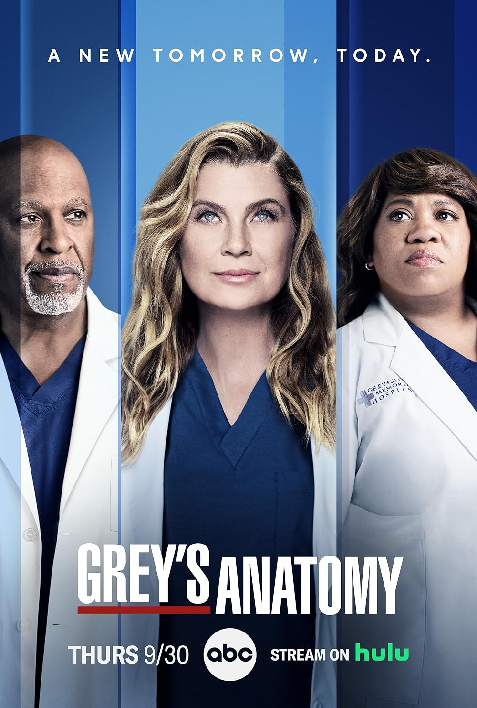
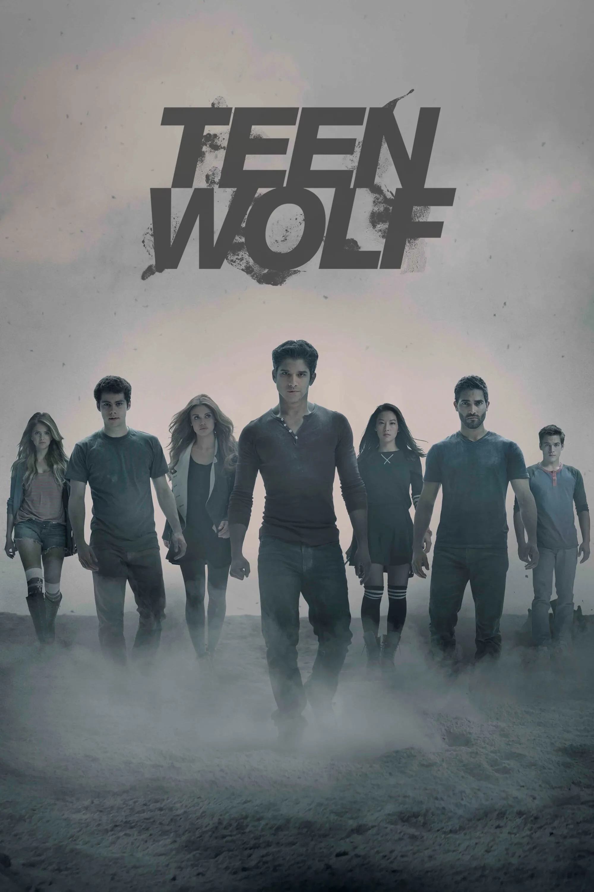
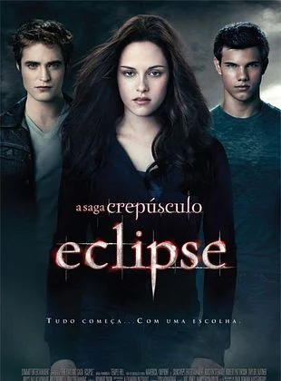
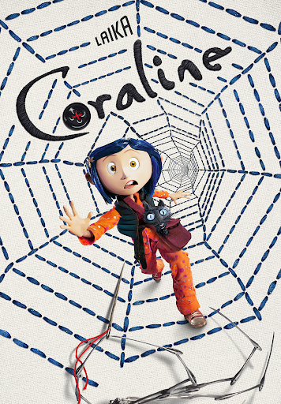

Depois do desaparecimento de Alison, as adolescentes Spencer, Aria, Hanna e Emily,
agora no ensino médio, têm um novo desafio: desvendar mensagens anônimas ameaçando contar seus segredos.

Grey's Anatomy é uma série médica que mostra a vida da cirurgiã
Meredith Grey e seus colegas, unindo casos médicos intensos com dramas pessoais.

Teen Wolf é uma série que acompanha Scott McCall, um adolescente que vira
lobisomem após ser mordido. Ele precisa lidar com seus novos poderes,
proteger seus amigos e enfrentar criaturas sobrenaturais, enquanto tenta viver uma vida normal no colégio.

A Saga Crepúsculo conta a história de Bella Swan, uma jovem que se apaixona por Edward Cullen, um vampiro. Juntos, eles
enfrentam perigos, romances e conflitos entre humanos, vampiros e lobisomens.

Coraline conta a história de uma menina que descobre uma porta secreta em sua nova casa. Do outro lado, encontra um
“outro mundo”, parecido com o seu, mas cheio de mistérios e perigos, onde nada é realmente o que parece.